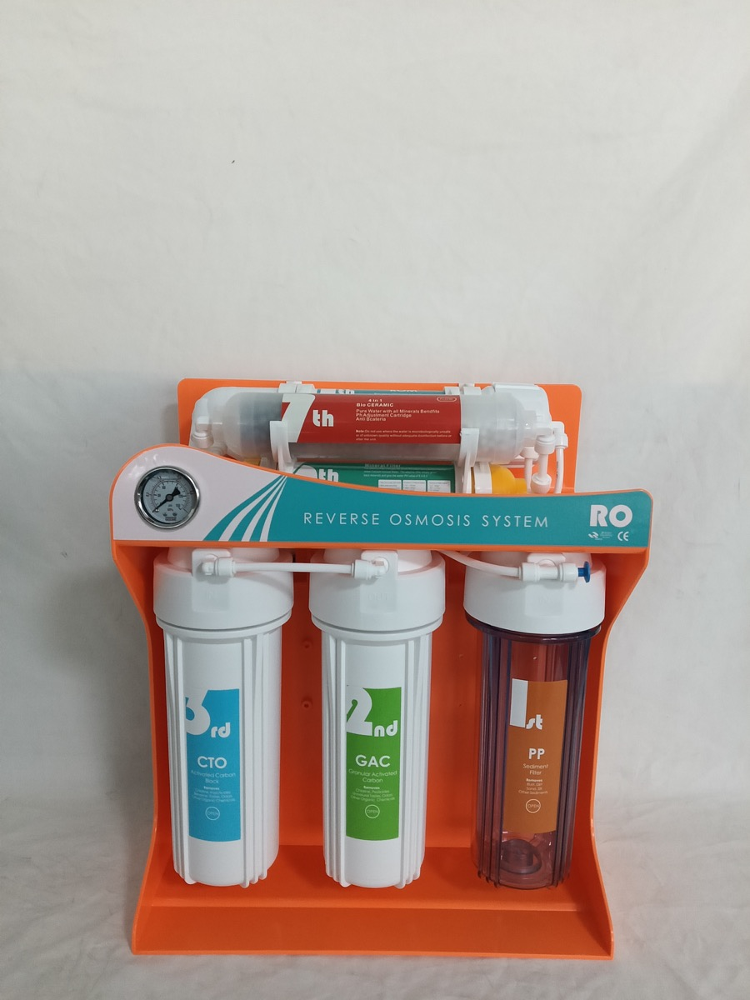

Córais íonúcháin uisce RO · 5 · 6 · 7 · RO · uf
Deimhnigh an nasc, na toisí agus riachtanais an tionscadail roimh luachan.
TeagmháilDeimhnigh an nasc, na toisí agus riachtanais an tionscadail roimh luachan.

Deimhnigh an nasc, na toisí agus riachtanais an tionscadail roimh luachan.
TeagmháilFéadfaidh sonraíochtaí athrú de réir na cumraíochta roghnaithe. Deimhnigh na riachtanais deiridh roimh an luachan.
| Product Type | Custom 5, 6 or 7 stage RO water purifier system |
|---|---|
| Material | Food-grade plastic filter housings, plastic or metal bracket, optional pressure gauge and quick fittings |
| Size | Customized by stage quantity, bracket style, backboard layout and tank or pump configuration |
| Micron Rating | PP sediment filter commonly 1 micron or 5 micron; carbon and polishing stages configured by media plan |
| Flow Rate | Depends on RO membrane capacity, pump configuration, inlet pressure and requested OEM specification |
| Application | RO water purifier, water dispenser, pre-filtration system, commercial water treatment, replacement cartridge market |
| OEM/ODM | Logo, label, packaging, bracket color, front panel, filter stages, pressure gauge and carton design |
| MOQ | Confirm by configuration, packaging, artwork and customization level |